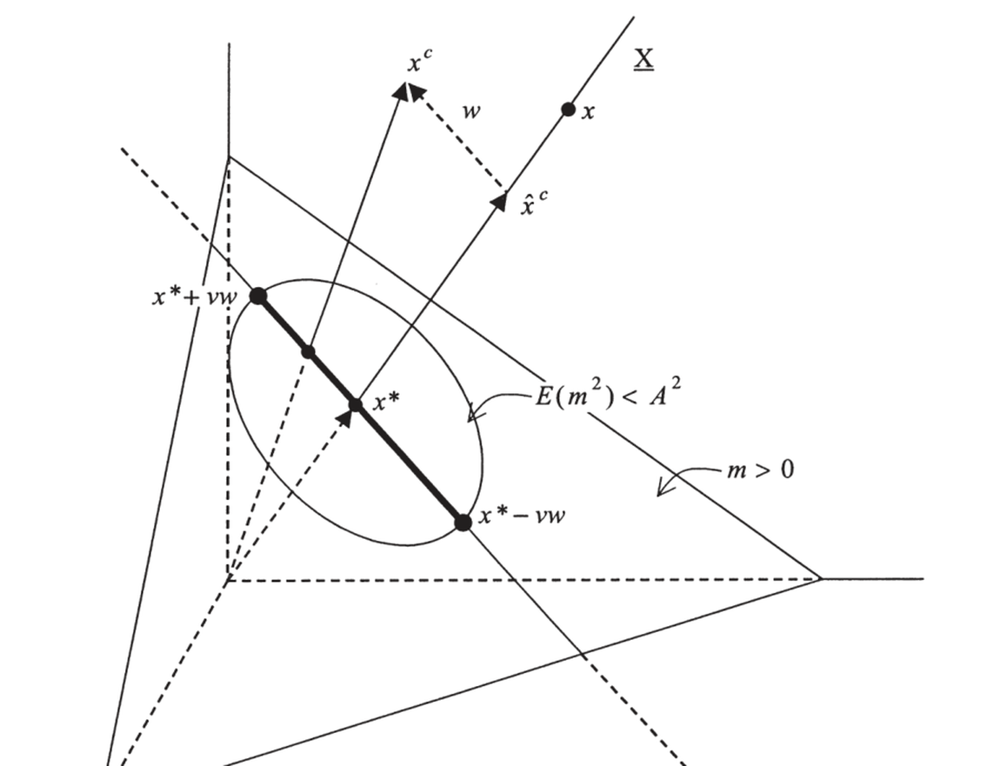
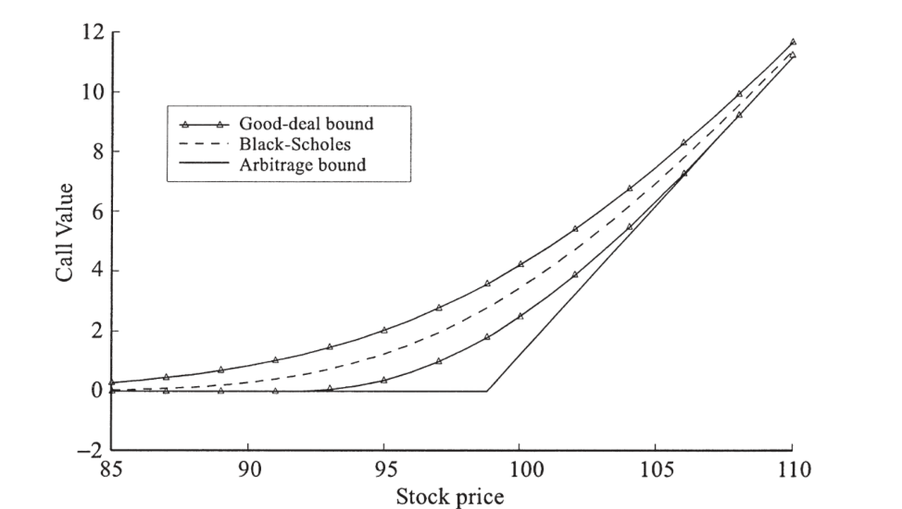

18. Option Pricing without Perfect Replication
18. Option Pricing without Perfect Replication
本章导读 Black-Scholes 靠"连续动态交易完美复制"成立，但现实中常失效：不能连续交易（交易成本）、价格会跳跃（1987 年组合保险失灵）、利率/波动率随机却无对应可对冲证券、标的不可交易（实物期权、高管期权）。这些情形里期权与最佳对冲组合之间有不可避免的基差风险 (basis risk)，期权价值取决于该风险的"市场价格"。本章（Cochrane 第 18 章）介绍 Cochrane-Saá-Requejo (2000) 的 good-deal 界：在所有"给基础资产定价、为正、且波动率（夏普比率）受限"的贴现因子上求期权价的上下界。§18.2 一期 good-deal 界（三种约束组合：仅波动率约束紧 / 仅正性约束紧 = 套利界 / 二者皆紧）；§18.3 多期与连续时间（界可递归、基差风险与实物期权、连续时间 PDE）；§18.4 其他约束（单调性、gain-loss 界 Bernardo-Ledoit）。
18. Option Pricing without Perfect Replication
Overview Black-Scholes rests on "perfect replication via continuous dynamic trading," but in practice this often breaks down: you cannot trade continuously (transaction costs); prices jump (portfolio insurance failed in the 1987 crash); interest rates / volatility are stochastic with no security to hedge them; the underlying is not traded (real options, executive options). In these cases an unavoidable basis risk creeps in between the option payoff and the best hedge portfolio, and the option's value depends on the "market price" of that risk. This chapter (Cochrane Ch 18) presents the good-deal bounds of Cochrane-Saá-Requejo (2000): the upper and lower option-price bounds over all discount factors that price the basis assets, are positive, and have limited volatility (Sharpe ratio). §18.2 one-period good-deal bounds (three constraint combinations: only the volatility constraint binds / only positivity binds = arbitrage bounds / both bind); §18.3 multiple periods and continuous time (the bounds are recursive, basis risk and real options, the continuous-time PDE); §18.4 other restrictions (monotonicity, the gain-loss bounds of Bernardo-Ledoit).
18.1 在套利的边缘 / On the Edges of Arbitrage
若期权真是冗余（可完美复制），它们就不会作为独立资产被交易了。现实里诸多情形使 Black-Scholes 的一价定律论证失效：跳跃（Poisson jump）、随机利率/波动率（无对应可对冲证券）、不可交易标的。这些都引入基差风险。但我们不想就此退回消费模型等"绝对"定价法——我们仍愿以大量资产（尤其用于对冲的资产）价格为给定。思路：构造一个"近似对冲"组合贴住目标支付，把不确定性缩减到残差的定价；既然残差小，就能在比绝对模型弱得多的贴现因子限制下说出很多关于期权价的话。许多作者直接假设市场风险价格——但这留下问题：结果对该假设多敏感？什么是合理值？good-deal 界系统地在所有"残差市场风险价格"上搜索，约束总风险价格于合理值、并施加无套利，得到价格上下界。
18.2 一期 good-deal 界 / One-Period Good-Deal Bounds
18.1 On the Edges of Arbitrage
If options really were redundant (perfectly replicable), they would not be traded as separate assets. In reality many situations break the law-of-one-price argument of Black-Scholes: jumps (Poisson jumps), stochastic interest rates/volatility (no security to hedge them), non-traded underlyings. All introduce basis risk. But we do not want to retreat to the consumption model or other "absolute" methods — we still take the prices of many assets (especially the hedging assets) as given. The idea: form an "approximate hedge" portfolio close to the focus payoff, reducing the uncertainty to pricing the residual; and since the residual is small, we can say a lot about the option price under much weaker discount-factor restrictions than absolute models. Many authors simply assume a market price of risk — but this leaves the questions: how sensitive are the results to that assumption, and what are reasonable values? The good-deal bounds systematically search over all assignments of the residual's market price of risk, constrain the total price of risk to a reasonable value, and impose no-arbitrage, to find upper and lower price bounds.
18.2 One-Period Good-Deal Bounds
good-deal 界的定义 / Definition of the good-deal bound
求目标支付 \(x^c\)（如 \(\max(S_T-K,0)\)）的价值上下界，在所有满足下述条件的贴现因子上搜索：
\(\underline C=\min_m E(mx^c)\) s.t. \(p=E(mx)\)（给基础资产定价）、\(m\ge0\)（无套利）、\(\sigma^2(m)\le h/R^f\)（波动率受限）。
第一约束做尽可能多的相对定价；第二是无套利（去掉第三约束即得套利界，通常太宽）；第三是 good-deal 相对套利界的额外内容——因 \(\sigma^2(m)\le h/R^f\) 等价于"任何被 \(m\) 定价的组合夏普比率不超过 \(h\)"（由 \(E(mR^e)=0\Rightarrow E(m)E(R^e)=-\rho\sigma(m)\sigma(R^e)\)、\(|\rho|\le1\)）。有无风险利率时 \(E(m)=1/R^f\)，约束写成二阶矩 \(E(m^2)\le A^2\)，\(A^2=(1+h^2)/R^{f2}\)。Find the value bounds of a focus payoff \(x^c\) (e.g. \(\max(S_T-K,0)\)) by searching over all discount factors satisfying:
\(\underline C=\min_m E(mx^c)\) s.t. \(p=E(mx)\) (price the basis assets), \(m\ge0\) (no-arbitrage), \(\sigma^2(m)\le h/R^f\) (limited volatility).
The first does as much relative pricing as possible; the second is no-arbitrage (dropping the third gives the arbitrage bounds, usually too wide); the third is the extra content of good-deal over arbitrage bounds — since \(\sigma^2(m)\le h/R^f\) is equivalent to "no portfolio priced by \(m\) has a Sharpe ratio above \(h\)" (from \(E(mR^e)=0\Rightarrow E(m)E(R^e)=-\rho\sigma(m)\sigma(R^e)\), \(|\rho|\le1\)). With a risk-free rate \(E(m)=1/R^f\), the constraint becomes a second moment \(E(m^2)\le A^2\), \(A^2=(1+h^2)/R^{f2}\).
这是带两个不等式约束的标准最小化，按约束的难易依次试解。(1) 波动率约束紧、正性松。 把目标支付正交分解 \(x^c=\hat x^c+w\)，\(\hat x^c=\operatorname{proj}(x^c|X)\) 是近似对冲（其价已知）、\(w\) 是残差。如图 18.1：所有给 \(x\) 定价的 \(m\) 在过 \(x^*\) 的平面内，沿之扫过可给残差任意价（套利界即 \(m>0\) 那块三角区）；二阶矩定义距离，故 \(E(m^2)\le A^2\) 的 \(m\) 落在以原点为心的球内（图中圆）。要最大/最小化残差价 \(E(mw)\)，\(m\) 应尽量指向/背离 \(w\)；任何正交于 \(w\) 的变动 \(\varepsilon\) 只增波动率而不改残差价。故下界贴现因子 \(\underline m=x^*-\underline v\,w\)，\(\underline v=\sqrt{(A^2-E(x^{*2}))/E(w^2)}\)，界为 \(\underline C=E(x^*x^c)-\underline v\,E(w^2)\)（首项是近似对冲组合之值、次项是残差在波动率约束下的最低价）。验证 \(\underline m\ge0\)：若是则此即 good-deal 界。
This is a standard minimization with two inequality constraints, solved by trying constraint combinations in order of ease. (1) Volatility binds, positivity slack. Orthogonally decompose the payoff \(x^c=\hat x^c+w\), with \(\hat x^c=\operatorname{proj}(x^c|X)\) the approximate hedge (price known) and \(w\) the residual. As in Figure 18.1: all \(m\) pricing \(x\) lie in the plane through \(x^*\), and sweeping along it gives any price to the residual (the arbitrage bounds are the \(m>0\) triangular region); the second moment defines distance, so the \(m\) with \(E(m^2)\le A^2\) lie in a sphere about the origin (the circle). To max/minimize the residual price \(E(mw)\), \(m\) should point toward/away from \(w\) as much as possible; any movement \(\varepsilon\) orthogonal to \(w\) only raises volatility without changing the residual price. So the lower-bound discount factor is \(\underline m=x^*-\underline v\,w\), \(\underline v=\sqrt{(A^2-E(x^{*2}))/E(w^2)}\), with bound \(\underline C=E(x^*x^c)-\underline v\,E(w^2)\) (the first term the approximate-hedge value, the second the lowest residual price consistent with the volatility constraint). Check \(\underline m\ge0\): if so, this is the good-deal bound.

图 18.1 正性约束松时,求解一期 good-deal 界的贴现因子构造。给基础资产定价的 \(m\) 在过 \(x^*\) 的平面内;\(E(m^2)\le A^2\) 的圆内 \(m\) 中,最指向/背离残差 \(w\) 者给出上/下界 \(x^*\pm\underline v\,w\)。
Figure 18.1 Construction of the discount factor for the one-period good-deal bound when positivity is slack. The \(m\) pricing the basis assets lie in the plane through \(x^*\); among those inside the \(E(m^2)\le A^2\) circle, the ones pointing most toward/away from the residual \(w\) give the upper/lower bound \(x^*\pm\underline v\,w\).
(2) 正性紧、波动率松。 即经典套利界（第 17 章），一般是个线性规划。还须验证套利界处能否满足波动率约束。(3) 两约束皆紧。 引入 Lagrange 乘子,贴现因子是支付的截断线性组合 \(m=\max(-(x^c+\lambda'x)/\delta,\,0)\)（金融上即零执行价的看涨期权）。直接代回约束求 \(\lambda,\delta\) 要解非线性方程组、数值困难;Hansen-Heaton-Luttmer (1995) 把它重述为更易的最大化问题(交换 min/max)。
(2) Positivity binds, volatility slack. These are the classic arbitrage bounds (Ch 17), generally a linear program. One must still check whether the volatility constraint can be met at the arbitrage bound. (3) Both bind. With Lagrange multipliers, the discount factor is a truncated linear combination of the payoffs \(m=\max(-(x^c+\lambda'x)/\delta,\,0)\) (in finance terms, a call option with zero strike). Plugging back to solve for \(\lambda,\delta\) requires a nonlinear system (numerically hard); Hansen-Heaton-Luttmer (1995) recast it as an easier maximization (interchanging min/max).

图 18.2 good-deal 期权价界(随股价变化)。三个月到期、执行价 \(K=100\)、无中间交易,贴现因子波动率界 \(h=1.0\)(两倍市场夏普比率)。good-deal 上界远紧于套利上界(\(C\le S\) 太高画不下);下界在股价约 90–110 之外与套利下界重合(正性紧),区间内则更紧(两约束皆紧)。对照基准是套利界,而非 Black-Scholes 公式(因无中间交易)。
Figure 18.2 Good-deal option price bounds vs. stock price. Three months to expiration, strike \(K=100\), no intermediate trading, discount-factor volatility bound \(h=1.0\) (twice the market Sharpe ratio). The good-deal upper bound is far tighter than the arbitrage upper bound (\(C\le S\) is too high to fit); the lower bound coincides with the arbitrage lower bound outside ~90–110 (positivity binds) and is tighter inside (both bind). The benchmark is the arbitrage bounds, not Black-Scholes (since there is no intermediate trading).
good-deal 界 ≠ 仅对期权施加低夏普比率 / Good-deal bounds are NOT just low Sharpe ratios on options 必须同时施加波动率与正性约束。仅波动率约束会允许负价：一张免费的价外看涨期权像彩票——是套利机会,但其期望收益/标准差极差(标准差太大),纯夏普比率准则拦不住它。反过来,并非所有落在 good-deal 界外的值都意味着高夏普比率或套利——它们可能由"为正但极波动"的贴现因子、或"波动较小但有时为负"的贴现因子分别生成,却没有任何贴现因子能同时非负且满足波动率约束。排除这些值是合理的:若已知投资者会抓住任何套利或任何超 \(h\) 的夏普比率,则其唯一边际效用同时满足两约束,会在界外找到改善交易。正确做法是对贴现因子的多个约束取交集;简单的组合解释(夏普比率、套利)虽历史上重要,随约束增多会逐渐失去意义。One must impose both the volatility and positivity constraints. The volatility constraint alone admits negative prices: a free out-of-the-money call is like a lottery ticket — an arbitrage opportunity, but with a terrible expected-return/standard-deviation ratio (the standard deviation is huge), so a pure Sharpe-ratio criterion won't rule it out. Conversely, not all values outside the good-deal bounds imply high Sharpe ratios or arbitrage — they might be generated by a positive-but-highly-volatile discount factor, or a less-volatile-but-sometimes-negative one, while no discount factor generates them that is simultaneously non-negative and respects the volatility bound. Ruling these out makes sense: if an investor takes any arbitrage or any Sharpe ratio above \(h\), his unique marginal utility satisfies both constraints and would find an improving trade outside the bounds. The right thing is to intersect the discount-factor restrictions; simple portfolio interpretations (Sharpe ratio, arbitrage), while historically important, fall by the wayside as restrictions accumulate.
18.3 多期与连续时间 / Multiple Periods and Continuous Time
期权定价的精髓在于(即便不完美的)动态对冲,故 good-deal 界必须能用于多期。关键:界是递归的。 今日的界可由"明日界的最低价"算出——两期问题 \(\min E_0(m_1m_2x^c_2)\) 等价于先解 \(\underline C_1=\min E_1(m_2x^c_2)\)、再 \(\underline C_0=\min E_0(m_1\underline C_1)\)(因须在每个时间-1 状态最小化 \(E_1(m_2x^c)\))。注意此递归性只在 \(m>0\) 时成立——若允许 \(m_1<0\),某些状态下反而想最大化。
基差风险与实物期权。 给一个写在非交易事件 \(V\) 上、\(V\) 与可交易资产 \(S\) 相关的欧式看涨期权定价(实物期权、非金融期权)。建模 \(dS/S=\mu_S dt+\sigma_S dz\)、\(dV/V=\mu_V dt+\sigma_{Vz}dz+\sigma_{Vw}dw\),\(dw\) 风险无法被 \(S\) 对冲,故其市场风险价格影响期权价。贴现因子取 \(\frac{d\Lambda}{\Lambda}=\frac{d\Lambda^*}{\Lambda^*}\pm\sqrt{A^2-h_S^2}\,dw\)(在正交冲击 \(dw\) 上加恰好满足波动率约束的载荷,\(\pm\) 给上/下界)。\(S,V,\Lambda\) 联合对数正态,积分得带 \(\eta\) 项的 Black-Scholes 式 \(C=V_0e^{\eta T}\Phi(d+\tfrac12\sigma_V\sqrt T)-Ke^{-rT}\Phi(d-\tfrac12\sigma_V\sqrt T)\):相关性 \(\rho\) 越低、波动率界 \(A\) 相对资产夏普比率越大,界越宽。
18.3 Multiple Periods and Continuous Time
The essence of option pricing is (even imperfect) dynamic hedging, so good-deal bounds must work in multiple periods. The key: the bounds are recursive. Today's bound is the lowest price of tomorrow's bound — the two-period \(\min E_0(m_1m_2x^c_2)\) is equivalent to first solving \(\underline C_1=\min E_1(m_2x^c_2)\), then \(\underline C_0=\min E_0(m_1\underline C_1)\) (since one must minimize \(E_1(m_2x^c)\) in each time-1 state). This recursion holds only with \(m>0\) — if \(m_1<0\) were possible, you might want to maximize in some states.
Basis risk and real options. Price a European call on a non-traded event \(V\) correlated with a traded asset \(S\) (real options, non-financial options). Model \(dS/S=\mu_S dt+\sigma_S dz\), \(dV/V=\mu_V dt+\sigma_{Vz}dz+\sigma_{Vw}dw\); the \(dw\) risk cannot be hedged by \(S\), so its market price of risk matters. The discount factor is \(\frac{d\Lambda}{\Lambda}=\frac{d\Lambda^*}{\Lambda^*}\pm\sqrt{A^2-h_S^2}\,dw\) (a loading on the orthogonal shock \(dw\) just enough to meet the volatility constraint; \(\pm\) gives the upper/lower bound). \(S,V,\Lambda\) are jointly lognormal, and the integral gives a Black-Scholes formula with an extra \(\eta\) term \(C=V_0e^{\eta T}\Phi(d+\tfrac12\sigma_V\sqrt T)-Ke^{-rT}\Phi(d-\tfrac12\sigma_V\sqrt T)\): the lower the correlation \(\rho\) and the larger the volatility bound \(A\) relative to the asset Sharpe ratios, the wider the bounds.
市场风险价格语言。 连续时间问题常用"市场风险价格" \(\lambda\)(资产载荷于某冲击时须挣的瞬时夏普比率)而非贴现因子来表述:\(E_t(dP/P)-r^f dt=\lambda\sigma\)。在此语言下,股票风险价格 \(h_S\) 可观测、且在可套利定价时无关紧要(故不出现在 BS 式中);问题归结为选 \(dw\) 的市场风险价格(不可由交易资产观测),以最小/最大化期权价,约束总价 \(\sqrt{h_S^2+\lambda^2}\le A\)。连续时间系统处理: 同样可得微分刻画——把贴现因子正交化为 \(\frac{d\Lambda}{\Lambda}=\frac{d\Lambda^*}{\Lambda^*}-v\,dw\),\(v\) 是 \(dw\) 各冲击的市场风险价格向量,受 \(vv'\le A^2-\tilde\mu_S'\Sigma_S^{-1}\tilde\mu_S\) 约束;最小化即"在每时点把市场风险价格分配给 \(dw\) 冲击以最小化目标价"。可导出 good-deal 界的偏微分方程(类似 BS PDE,从到期倒解);仅当只有一个 \(dw\) 冲击时,\(v\) 由波动率约束直接定出、可前向积分求界而无需解 PDE(上面非交易标的的例子即此)。
18.4 其他约束与方法 / Other Restrictions and Approaches
Market-price-of-risk language. Continuous-time problems are often stated via the "market price of risk" \(\lambda\) (the instantaneous Sharpe ratio an asset must earn if it loads on a shock) rather than the discount factor: \(E_t(dP/P)-r^f dt=\lambda\sigma\). In this language, the stock's price of risk \(h_S\) is observable and irrelevant when pricing by arbitrage (so it is absent from the BS formula); the problem reduces to choosing the market price of \(dw\) risk (not observable from a traded asset) to min/maximize the option price, subject to a total price \(\sqrt{h_S^2+\lambda^2}\le A\). Systematic continuous-time treatment: one again obtains a differential characterization — orthogonalize the discount factor as \(\frac{d\Lambda}{\Lambda}=\frac{d\Lambda^*}{\Lambda^*}-v\,dw\), where \(v\) is the vector of market prices of the \(dw\) shocks, constrained by \(vv'\le A^2-\tilde\mu_S'\Sigma_S^{-1}\tilde\mu_S\); minimizing means "at each instant, assign market prices of risk to the \(dw\) shocks to minimize the focus value." One can derive a partial differential equation for the good-deal bound (like the BS PDE, solved back from expiration); only when there is a single \(dw\) shock can \(v\) be determined directly from the volatility constraint and the bound found by forward integration without a PDE (the non-traded-underlying example above).
18.4 Other Restrictions and Approaches
加更多贴现因子约束 / Add more discount-factor restrictions good-deal 界的根源可追溯到 Ross (1976) 用"组合夏普比率不超两倍市场"来界定 APT 残差。一期 good-deal 界是带正性的 Hansen-Jagannathan (1991) 界的对偶——HJ 求正贴现因子的最小方差,good-deal 把期权定价方程与贴现因子方差的位置互换。波动率并不神奇,可加其他弱而可信的约束:① 边际效用随财富单调下降(Levy 1985, Constantinides 1998);② 把 \(-1\le\rho\le1\) 收紧;③ Bernardo-Ledoit (2000) 的 \(a\ge m\ge b\) 对应有限的 gain-loss 比 \(\max[R^e]_+/[R^e]_-=\min\sup(m)/\inf(m)\)(与夏普比率 \(\max|E(R^e)|/\sigma(R^e)=\min\sigma(m)/E(m)\) 完美对偶,暗示用 \(L^1\)/sup 范数重述资产定价),还可 \(a\ge m/y\ge b\) 施加某模型 \(y\) 的"弱含义"。这些并非竞争者——把适用且有用的约束统统加上、取交集。这正是贴现因子方法相对组合方法的强项:正性 + 波动率的交集给出比"无套利 ∩ 有限夏普比率"更紧的界,而后者无简单组合刻画。连续时间里跳跃情形(正性与波动率约束都会紧)尚未被处理。The good-deal idea traces to Ross (1976) bounding APT residuals by "no portfolio above twice the market Sharpe ratio." The one-period good-deal bound is the dual of the Hansen-Jagannathan (1991) bound with positivity — HJ finds the minimum variance of positive discount factors; good-deal interchanges the option pricing equation and the discount-factor variance. Volatility is not magic; add other weak-but-credible restrictions: ① marginal utility declines monotonically with wealth (Levy 1985, Constantinides 1998); ② tighten \(-1\le\rho\le1\); ③ Bernardo-Ledoit's (2000) \(a\ge m\ge b\) corresponds to limited gain-loss ratios \(\max[R^e]_+/[R^e]_-=\min\sup(m)/\inf(m)\) (perfectly dual to the Sharpe ratio \(\max|E(R^e)|/\sigma(R^e)=\min\sigma(m)/E(m)\), hinting at restating asset pricing in \(L^1\)/sup norm), and \(a\ge m/y\ge b\) imposes a "weak implication" of a model \(y\). These are not competitors — add all the restrictions appropriate and useful, and intersect them. This is the strength of discount-factor over portfolio methods: the intersection of positivity and volatility gives a sharper bound than "no-arbitrage ∩ limited Sharpe ratio," which has no simple portfolio characterization. The continuous-time treatment of jumps (where both constraints bind) is not yet developed.
小结 / Summary
现实中完美复制常失效(跳跃、随机波动率/利率、不可交易标的),期权与对冲组合间留有基差风险。good-deal 界以贴现因子方法应对:在所有"给基础资产定价、为正、波动率(夏普比率)受限"的 \(m\) 上求期权价上下界,远紧于套利界。关键是同时施加正性与波动率约束(只用其一不够);界递归故可用于多期/连续时间(得 PDE 或带 \(\eta\) 项的 BS 式)。它是带正性的 HJ 界的对偶,可与单调性、gain-loss 等约束取交集——体现"叠加贴现因子约束"相对组合方法的威力。下一章把这套(连续时间、链接、风险价格)用于利率期限结构。
Summary
In practice perfect replication often fails (jumps, stochastic volatility/rates, non-traded underlyings), leaving basis risk between the option and its hedge. The good-deal bounds address this via the discount-factor approach: find option-price bounds over all \(m\) that price the basis assets, are positive, and have limited volatility (Sharpe ratio) — far tighter than arbitrage bounds. The key is to impose positivity and volatility together (either alone is insufficient); the bounds are recursive and so extend to multiple periods/continuous time (a PDE or a Black-Scholes formula with an extra \(\eta\) term). They are the dual of the HJ bound with positivity and can be intersected with monotonicity, gain-loss, and other restrictions — the power of "stacking discount-factor restrictions" over portfolio methods. The next chapter applies this machinery (continuous time, chaining, prices of risk) to the term structure of interest rates.
习题 / Problems
- 证明 (18.32)：\(\max_{R^e}\dfrac{[R^e]_+}{[R^e]_-}=\min_{m:0=E(mR^e)}\dfrac{\sup(m)}{\inf(m)}\)。从有限状态空间入手。
- 二项模型。股价 \(S\) 将以概率 \(\pi_u\) 升至 \(uS\)、以 \(\pi_d\) 降至 \(dS\),期间无股利,常数毛利率 \(R^f\)。(a) 求给股票与债券定价的贴现因子(每个状态的值)；(b) 用它给到期前一步的看涨期权定价,以风险中性概率表期望值；(c) 到期前两步同理；(d) 用 Cox-Ross-Rubinstein (1979) 的对冲组合法(选股债权重精确合成期权)重新推导。
Problems
- Prove (18.32): \(\max_{R^e}\dfrac{[R^e]_+}{[R^e]_-}=\min_{m:0=E(mR^e)}\dfrac{\sup(m)}{\inf(m)}\). Start with a finite state space.
- Binomial model. A stock at \(S\) will rise to \(uS\) with probability \(\pi_u\) or fall to \(dS\) with probability \(\pi_d\), paying no dividends, with a constant gross rate \(R^f\). (a) Find a discount factor pricing the stock and bond (its value in each state); (b) use it to price a call one step before expiration, as an expectation under risk-neutral probabilities; (c) do the same two steps before; (d) rederive via the Cox-Ross-Rubinstein (1979) hedge-portfolio method (choosing stock-bond weights to synthesize the option exactly).